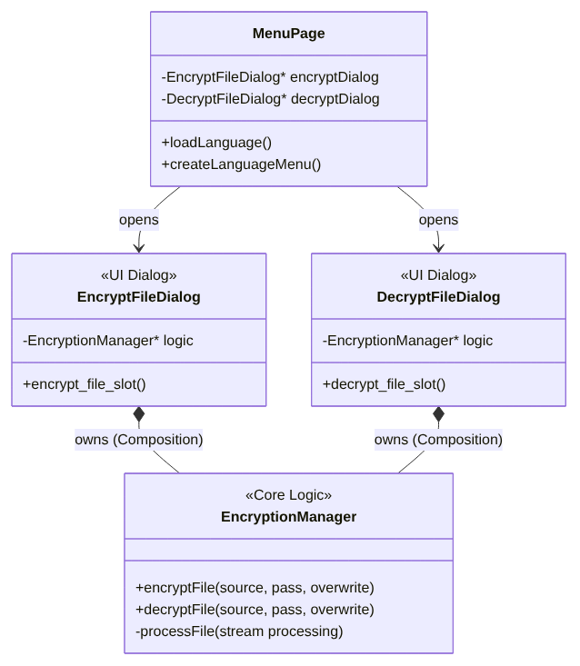

Structure Diagram

Data Flow (Streaming)
To keep memory usage minimal, files are never loaded completely into RAM. Instead, a QFile stream is used:
- Open: Source and destination files are opened.
-
Loop:
- Read 4 MB chunk from source stream.
- Process block (AES Encode/Decode) via QAESEncryption.
- Write processed block to destination stream.
- Close: Streams are closed, temporary files are renamed or moved.